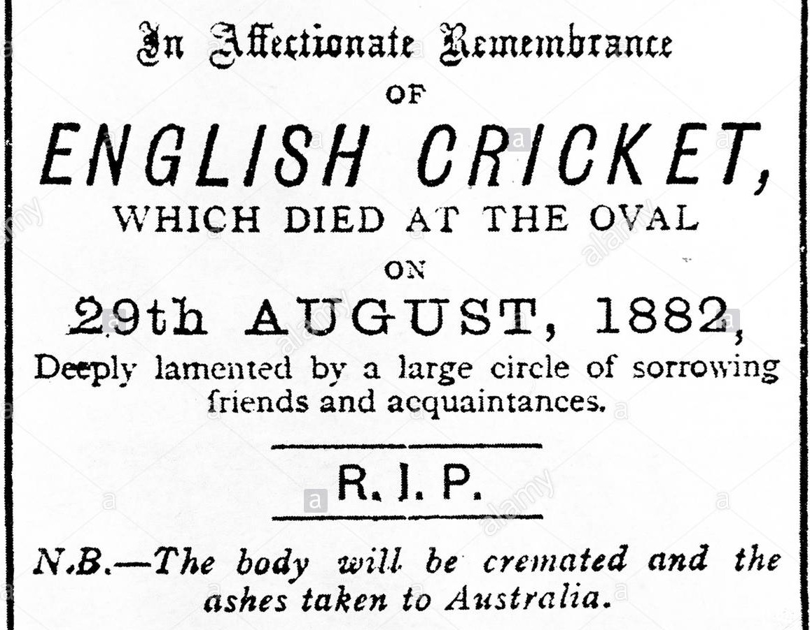

The Ashes is a Test cricket series played between England and Australia. The term originated in a satirical obituary published in a British newspaper, The Sporting Times, immediately after Australia's 1882 victory at The Oval, its first Test win on English soil. The obituary stated that English cricket had died, and "the body will be cremated and the ashes taken to Australia".[1] The mythical ashes immediately became associated with the 1882–83 series played in Australia, before which the English captain Ivo Bligh had vowed to "regain those ashes". The English media therefore dubbed the tour the quest to regain the Ashes.
After England had won two of the three Tests on the tour, a small urn was presented to Bligh by a group of Melbourne women including Florence Morphy, whom Bligh married within a year.[2] The contents of the urn are reputed to be the ashes of a wooden bail, and were humorously described as "the ashes of Australian cricket".[3] It is not clear whether that "tiny silver urn" is the same as the small terracotta urn given to the MCC by Bligh's widow after his death in 1927.
The urn has never been the official trophy of the Ashes series, having been a personal gift to Bligh.[4] However, replicas of the urn are often held aloft by victorious teams as a symbol of their victory in an Ashes series. Since the 1998–99 Ashes series, a Waterford Crystal representation of the Ashes urn (called the Ashes Trophy) has been presented to the winners of an Ashes series as the official trophy of that series. Irrespective of which side holds the tournament, the urn remains in the MCC Museum at Lord's; it has however been taken to Australia to be put on touring display on two occasions: as part of the Australian Bicentenary celebrations in 1988 and to accompany the Ashes series in 2006–07.
An Ashes series traditionally consists of five Tests, hosted in turn by England and Australia at least once every two years. The Ashes are regarded as being held by the team that most recently won the series. If the series is drawn, the team that currently holds the Ashes retains the trophy.
There have been 71 Ashes series: Australia have won 33, England 32 and six series have been drawn.